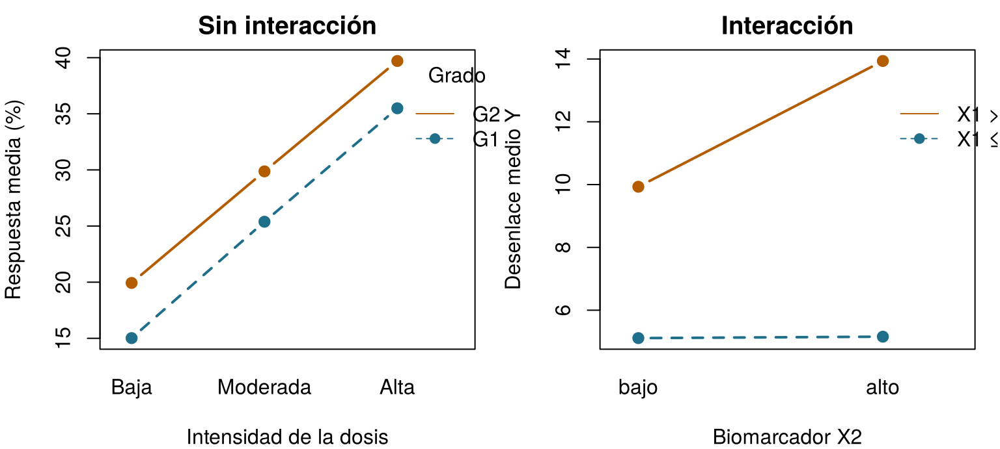
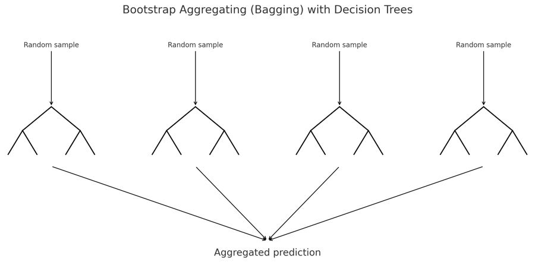
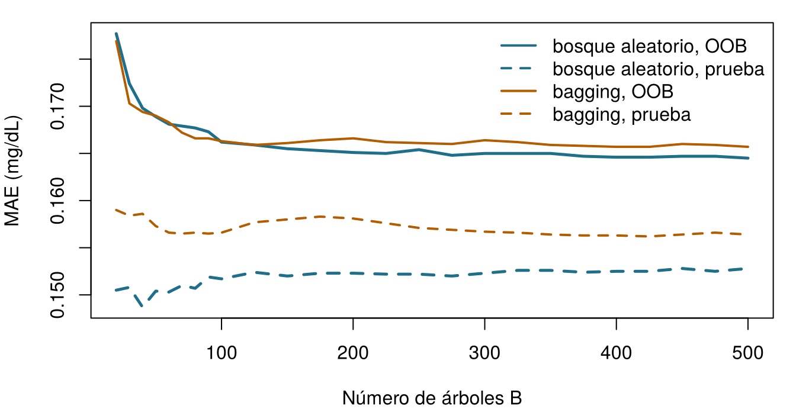
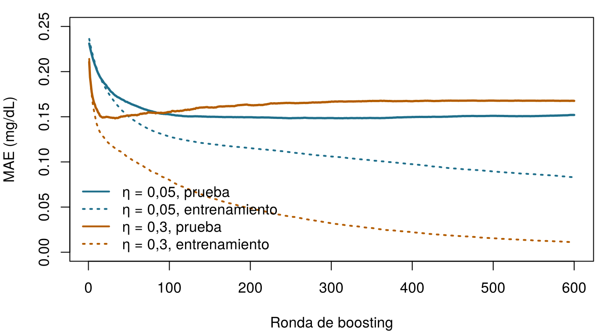

Son las 7 de la mañana en la UCI Sala 7. Seán, el farmacéutico de la unidad, ha pasado la noche revisando las dosis de los fármacos de los pacientes con riesgo de lesión renal aguda (LRA: un aumento de la creatinina de al menos 0,3 mg/dL en 48 horas (Kidney Disease: Improving Global Outcomes (KDIGO) Acute Kidney Injury Work Group 2012)). “Las puntuaciones de riesgo están bien”, le dice a la Dra. Emma Walsh, la intensivista, “pero a las 3 de la madrugada necesito algo que pueda seguir sin una pantalla delante: unas cuantas preguntas, en orden, que terminen en un riesgo.” Emma sonríe: eso es exactamente un árbol de decisión.
A unos pasillos de allí, el equipo del ensayo ONCO-1 (el ensayo aleatorizado de quimioterapia frente a ninguna quimioterapia del Capítulo 1) acaba de recibir el informe de un consultor: un modelo de árboles con boosting que predice qué pacientes responden a la quimioterapia con un área bajo la curva ROC de 0,998. Casi perfecto. ¿Deberían creérselo? Este capítulo construye las herramientas que hay detrás de ambas historias y termina con una lista de comprobación para la segunda.
Este es un pequeño árbol aprendido a partir de los 1000 pacientes de entrenamiento de la UCI Sala 7. Empieza por arriba, responde a cada pregunta para el paciente y sigue la rama hasta llegar a una caja con un riesgo. ¿Qué riesgo de LRA asigna el árbol a cada uno de los tres pacientes de esta noche? Haz tu mejor estimación; el capítulo explica de dónde sale el árbol.
Paciente
SOFA
Creatinina basal (mg/dL)
Riesgo de LRA según el árbol
Aoife Byrne, 71 años, sepsis
6
1,0
Tomás Ruiz, 54 años
3
0,9
Priya Nair, 38 años
12
1,5
Cómo usar este capítulo
¿Empiezas aquí?
Este capítulo toma prestadas algunas ideas de capítulos anteriores. En una línea cada una:
Conjuntos de entrenamiento y de prueba. Un modelo se ajusta con datos de entrenamiento y se evalúa en un conjunto de prueba que nunca ha visto (Sección 1.8). Este capítulo usa las divisiones compartidas del libro, del Capítulo 3, guardadas en data/splits/: 1000 pacientes de entrenamiento y 250 de prueba en la UCI Sala 7, 800 y 200 en ONCO-1, con los pacientes de entrenamiento repartidos en cinco particiones fijas de validación cruzada. Todos los modelos de la Parte II se evalúan con los mismos pacientes.
Sobreajuste y validación cruzada. Un modelo flexible puede memorizar ruido; la validación cruzada con \(V\) particiones estima el rendimiento en datos nuevos mientras se toman las decisiones (Definición 1.8, Definición 1.9). Un hiperparámetro es un ajuste que controla cómo se aprende un modelo, en lugar de aprenderse él mismo (Capítulo 3).
Métricas de error. El error absoluto medio (MAE) y la raíz del error cuadrático medio (RMSE) miden cuánto se alejan de la verdad las predicciones numéricas (Capítulo 3).
La regresión lineal y la logística predicen con una suma ponderada de las características (Capítulo 4, Capítulo 5); el área bajo la curva ROC (AUC) es la probabilidad de que un paciente elegido al azar con el evento reciba una puntuación más alta que uno sin él (Capítulo 5).
La fuga de información (leakage) es la presencia, en las características, de información que no estaría disponible, honestamente, en el momento de la predicción (Capítulo 3). La entropía mide la sorpresa (Capítulo 2).
Ejemplo
Quién o qué
Desenlace
Caras que vas a conocer
1UCI Sala 7
1250 pacientes de UCI en 4 hospitales
variación de la creatinina en 48 h (lesión renal aguda si ≥ 0,3 mg/dL)
Aoife (71 años, sepsis, riesgo limítrofe), Tomás (54 años, riesgo bajo), Priya (38 años, riesgo alto); la Dra. Emma Walsh; Seán, el farmacéutico
2Ensayo ONCO-1
1000 pacientes aleatorizados a quimioterapia o no
reducción del tumor (%)
pacientes #0042 y #0917
3HomeBeat
500 personas que llevan un reloj inteligente en casa
puntuación de estrés, evento de deterioro
Lena
4CellWorks
420 lotes de producción de una terapia celular
puntuación de potencia
lote CW-118
Los cuatro conjuntos de datos son simulados y pueden descargarse en el apéndice de datos. La presentación completa está en la Sección 1.1.
Este capítulo trata de modelos hechos de preguntas. Tiene catorce secciones y un Laboratorio, siete comprobaciones rápidas, tres widgets “Pruébalo” (hacer crecer un árbol, extraer muestras bootstrap, avanzar paso a paso por el boosting), un desafío y tres misiones de programación en R y Python. Calcula unas dos horas. Los bosques con cientos de árboles y los modelos XGBoost se entrenan una sola vez, fuera del navegador, y sus resultados se cargan aquí; todo lo demás se ejecuta en vivo.
La notación de un vistazo (solo para consulta)
Símbolo
Significado
Sección
\(R_1, \dots, R_{\lvert T\rvert}\)
las regiones (hojas) de un árbol \(T\); \(\lvert T\rvert\) es el número de hojas
Antes de soltar un árbol sobre datos clínicos, conviene verlo recuperar reglas que ya conocemos. Simulamos 200 instancias con dos características, \(X_1\) (piensa en algo como la edad, entre 0 y 10) y \(X_2\) (piensa en un biomarcador, centrado en cero), y un desenlace \(Y\) generado por reglas del tipo si–entonces más un poco de ruido:
Lee la salida de arriba abajo. El nodo 1 es la raíz: las 200 instancias, con media 8,89. La primera pregunta es “¿\(X_1 < 4{,}04\)?”. Quienes responden que sí (92 instancias) terminan en una caja final, una hoja, que predice 5,13. A los demás se les hace una segunda pregunta, “¿\(X_2 < 0{,}01\)?”, que los envía a hojas que predicen 9,93 o 13,94. El árbol ha redescubierto casi exactamente las tres reglas de la Ecuación 6.1, con umbrales de aproximadamente 4 y 0, sin nada más que los datos. Cada camino de la raíz a una hoja es una regla (Breiman et al. 1984; Hastie, Tibshirani, y Friedman 2009, cap. 9):
Figura 6.1: El árbol de juguete visto desde arriba. Cada punto es una instancia, sombreada según su desenlace; el árbol corta el plano en tres rectángulos y predice una constante (impresa) en cada uno.
Esto es lo que hace un árbol de regresión con cualquier conjunto de datos: trocea el espacio de las características en rectángulos y predice una constante en cada uno. El resto del capítulo explica cómo elige dónde cortar, hasta qué profundidad llegar y por qué, en la práctica, rara vez confiamos en un único árbol.
6.2 La anatomía de un árbol
El vocabulario viene de la botánica, puesta del revés: la raíz está arriba y las hojas abajo. La Figura 6.2 muestra el mismo ejemplo de juguete anotado a mano.
Figura 6.2: La anatomía de un árbol de decisión, anotada sobre una ejecución anterior de la simulación de juguete (por eso los números difieren un poco de los de arriba). Cada caja muestra el valor predicho, el número de instancias y su porcentaje de la muestra.
Definición 6.1 (Árbol de decisión) Un árbol de decisión predice un desenlace mediante una secuencia de preguntas de sí/no sobre las características, cada una de la forma “¿\(x_j \le s\)?” para una característica \(j\) y un umbral \(s\) (o “¿está \(x_j\) en este grupo de categorías?”). Sus partes son:
el nodo raíz, que contiene todas las instancias de entrenamiento;
los nodos internos, cada uno con una división (la pregunta) que envía las instancias a sus dos nodos hijos;
las hojas (nodos terminales), que hacen la predicción: el desenlace medio de las instancias de entrenamiento que llegan a ellas, en un árbol de regresión, o las proporciones de las clases, en un árbol de clasificación.
La profundidad de un árbol es el número de preguntas de su camino más largo de la raíz a una hoja.
Cada nodo lleva además información dentro del nodo (su predicción, el número de instancias y su fracción de la muestra), que resume el subgrupo creado por las preguntas que tiene encima, mientras que las divisiones llevan la lógica entre nodos que encamina cada instancia. Un hijo se convierte en un nodo interno, si merece la pena dividirlo más, o en una hoja.
Se leen como un razonamiento clínico. Cada predicción puede seguirse a lo largo de un camino de preguntas, que puede contrastarse con el conocimiento clínico y escribirse en la tarjeta de Seán.
Son locales. A diferencia de un modelo lineal, que supone una única relación para todos, cada rama puede comportarse de forma distinta. Los umbrales, las mesetas y los cambios bruscos surgen de manera natural.
Encuentran interacciones por sí solos (véase más abajo).
No les importa la escala. Una división depende solo del orden de los valores, así que el lactato en mmol/L o en mg/dL da el mismo árbol, y no hace falta estandarizar las características. Las características categóricas se tratan directamente, y algunas implementaciones encaminan las instancias con valores ausentes mediante divisiones sustitutas (surrogate splits).
Sus puntos débiles son igual de reales. Las predicciones saltan de una constante a la siguiente en cada umbral; y, como veremos en la Sección 6.6, un pequeño cambio en los datos puede producir un árbol muy diferente.
6.2.1 Una brevísima introducción a las interacciones
Dos características interactúan cuando el efecto de una sobre el desenlace depende del valor de la otra. En un modelo lineal, una interacción tiene que escribirse a mano, como un término de producto del tipo \(\beta_3 x_1 x_2\) (Capítulo 4). En un árbol aparece sola: una división en \(X_2\) que está por debajo de una división en \(X_1\) se aplica solo a las instancias de ese lado de \(X_1\). En el ejemplo de juguete, \(X_2\) solo importa cuando \(X_1 > 4\). Los ejemplos clínicos están por todas partes: un fármaco que funciona bien en pacientes más jóvenes y peor en los mayores, por la forma en que lo metabolizan; un gen cuya expresión predice la respuesta solo en tumores de alto grado; una curva dosis–respuesta empinada en pacientes con buen estado funcional y plana en los más frágiles; y, en genética, la interacción entre genotipo y ambiente que da forma a un fenotipo.
Un gráfico de interacción muestra el desenlace medio para cada combinación de dos características. Las líneas paralelas indican ausencia de interacción; las líneas que divergen o se cruzan indican una interacción (Figura 6.3).

Figura 6.3: Izquierda: respuesta tumoral simulada sin interacción: el efecto de la dosis es el mismo en los dos grados tumorales, por eso las líneas son paralelas. Derecha: los datos de juguete: el efecto del biomarcador X2 es nulo cuando X1 ≤ 4 y grande cuando X1 > 4, por eso las líneas divergen.
En ONCO-1 hay una interacción incorporada del mismo tipo: la intensidad de la dosis solo puede importar en los pacientes asignados al azar a quimioterapia, porque todos los del brazo de control tienen dosis cero. Un árbol lo descubre dividiendo primero por el tratamiento y por la dosis solo dentro de la rama de la quimioterapia.
Aoife (71 años, sepsis; en la UCI Sala 7) llega a una hoja de un árbol de regresión para el cambio de la creatinina que contiene 464 pacientes de entrenamiento. ¿Qué predice el árbol para ella?
6.3 Cómo aprende un árbol: impureza y divisiones
Un árbol de regresión es una función constante a trozos. Si sus hojas son las regiones \(R_1, \dots, R_{\lvert T\rvert}\) del espacio de las características, predice
donde \(\mathbf{1}\{\cdot\}\) vale 1 cuando la condición es cierta y 0 en caso contrario, y \(\bar y_{R_m}\) es el desenlace medio de las instancias de entrenamiento en la región \(R_m\). Visto así, un árbol es un modelo lineal en un conjunto de características indicadoras de sí/no, pero indicadoras aprendidas a partir de los datos en lugar de elegidas por el analista. Donde un modelo lineal inclina un plano, un árbol construye una escalera.
Encontrar el mejor conjunto posible de rectángulos es computacionalmente inabordable, así que los árboles se hacen crecer de forma voraz (greedy), una división cada vez, con el algoritmo CART (classification and regression trees, árboles de clasificación y regresión) (Breiman et al. 1984). En un nodo que contiene las instancias \(S\), CART prueba cada característica \(j\) y cada umbral \(s\), envía las instancias con \(x_j \le s\) a un hijo izquierdo \(S_L\) y el resto a un hijo derecho \(S_R\), y se queda con la división que hace que los hijos sean lo más homogéneos posible.
Definición 6.2 (Impureza y reducción de impureza) La impureza\(I(S)\) de un nodo mide lo mezclados que están los desenlaces de sus instancias; es cero cuando todos son iguales. Para un desenlace numérico, es la varianza dentro del nodo, \[
I(S) = \frac{1}{\lvert S\rvert}\sum_{i \in S} \left(y_i - \bar y_S\right)^2 .
\] Para un desenlace categórico con proporciones de clase \(\hat p_1, \dots, \hat p_G\) en el nodo, es el índice de Gini o la entropía, \[
I_{\text{Gini}}(S) = 1 - \sum_{g=1}^{G} \hat p_g^{\,2}, \qquad
I_{\text{ent}}(S) = -\sum_{g=1}^{G} \hat p_g \log_2 \hat p_g .
\] Una división de \(S\) en \(S_L\) y \(S_R\) se puntúa por su reducción de impureza\[
\Delta I = I(S) - \frac{\lvert S_L\rvert}{\lvert S\rvert} I(S_L) - \frac{\lvert S_R\rvert}{\lvert S\rvert} I(S_R),
\] y CART elige la división con el mayor \(\Delta I\).
Para un desenlace numérico, maximizar \(\Delta I\) equivale a minimizar el error cuadrático total de los dos hijos,
La entropía es la misma magnitud que medía la sorpresa en el Capítulo 2(Shannon 1948): un nodo en el que todos los pacientes tienen LRA no encierra ninguna sorpresa, mientras que un nodo 50/50 encierra un bit entero. Cuando la impureza se mide con la entropía, \(\Delta I\) se llama ganancia de información(Quinlan 1986).
Una división a mano. Un nodo contiene 100 pacientes de la UCI Sala 7, 60 con LRA y 40 sin ella. Su índice de Gini es \(1 - (0.6^2 + 0.4^2) = 0.48\). La división A envía 50 pacientes a la izquierda (45 con LRA) y 50 a la derecha (15 con LRA). El hijo izquierdo tiene un Gini de \(1 - (0.9^2 + 0.1^2) = 0.18\), el derecho \(1 - (0.3^2 + 0.7^2) = 0.42\), así que
La división B envía 90 pacientes a la izquierda (55 con LRA, Gini de aproximadamente 0,475) y 10 a la derecha (5 con LRA, Gini 0,5): \(\Delta I_B \approx 0.48 - 0.9 \times 0.475 - 0.1 \times 0.5 \approx 0.002\). La división A separa a los pacientes mucho mejor, y es la que CART se queda.
¿Cuál de estos nodos tiene la menor impureza de Gini?
6.3.1 Cómo es la búsqueda en la práctica
Para una característica continua, como el SOFA o la expresión de un gen, los umbrales candidatos son los puntos medios entre valores distintos consecutivos; para cada uno, el algoritmo calcula \(\Delta I\) y se queda con el mejor. Como solo importa el orden, no hace falta reescalar. Para una característica categórica con \(m\) niveles hay \(2^{m-1} - 1\) maneras de separar los niveles en dos grupos; rpart, la implementación de CART en R que usa este libro (Therneau y Atkinson 2023), evita probarlas todas ordenando los niveles según su desenlace medio (o su mezcla de clases) y probando solo las divisiones a lo largo de ese orden. Así puede descubrir, por ejemplo, que los grados tumorales G2 y G3 se comportan de forma parecida y separarlos de G1. Un factor ordenado se trata como un número. Cuando a una instancia le falta la característica usada en un nodo, rpart puede encaminarla mediante divisiones sustitutas: otras características que imitan la división principal, algo útil en tablas clínicas con huecos ocasionales (los datos ausentes tienen su propio capítulo, el Capítulo 9).
Haz crecer un árbol en la UCI Sala 7. El árbol de abajo predice el cambio de la creatinina en 48 horas a partir de dos características que tú eliges, usando los 1000 pacientes de entrenamiento. Cada rectángulo coloreado es una hoja; su color es la predicción de la hoja. Aumenta la profundidad máxima de un paso en un paso y observa dos cosas: cómo se multiplican los rectángulos y qué le ocurre al error en los 250 pacientes de prueba. Objetivo: encontrar la profundidad con el menor error de prueba.
icuRaw =FileAttachment("data/icu_aki.csv").csv({typed:true})w7split =FileAttachment("data/splits/ward7_split.csv").csv({typed:true})// asocia a cada paciente la etiqueta entrenamiento/prueba de la división compartida (Capítulo 3)icuT = icuRaw.map((d, i) => ({...d,set: w7split[i].set}))gtChoices =newMap([["Puntuación SOFA","sofa"], ["Creatinina basal (mg/dL)","baseline_creat"], ["Lactato (mmol/L)","lactate"], ["Presión arterial media mínima (mmHg)","map_min"], ["Albúmina (g/dL)","albumin"], ["PCR (mg/L)","crp"], ["Edad (años)","age"]])viewof gtX = Inputs.select(gtChoices, {value:"sofa",label:"Eje horizontal"})viewof gtY = Inputs.select(gtChoices, {value:"baseline_creat",label:"Eje vertical"})viewof gtDepth = Inputs.range([0,8], {value:1,step:1,label:"Profundidad máxima"})
gt = {const fx = gtX, fy = gtY === gtX ? (gtX ==="sofa"?"baseline_creat":"sofa") : gtY;const rows = icuT.map(d => ({x: d[fx],y: d[fy],t: d.delta_creatinine_48h,set: d.set}));const train = rows.filter(d => d.set==="train"), test = rows.filter(d => d.set==="test");const minLeaf =10, maxD =8;functiongrow(idx, depth, box) {const n = idx.length;let tot =0, totss =0;for (const i of idx) { tot += train[i].t; totss += train[i].t**2; }const node = {n,mean: tot / n, depth, box};if (depth >= maxD || n <2* minLeaf) return node;let best =null;for (const f of ["x","y"]) {const s = idx.slice().sort((a, b) => train[a][f] - train[b][f]);let ls =0, lss =0;for (let k =0; k < n -1; k++) {const v = train[s[k]].t; ls += v; lss += v * v;const nl = k +1, nr = n - nl;if (nl < minLeaf || nr < minLeaf) continue;const a = train[s[k]][f], b = train[s[k +1]][f];if (a === b) continue;const sse = (lss - ls * ls / nl) + ((totss - lss) - (tot - ls) **2/ nr);if (!best || sse < best.sse) best = {sse, f,thr: (a + b) /2, k, s}; } }if (!best) return node; node.f= best.f; node.thr= best.thr;const bl = {...box}, br = {...box};if (best.f==="x") { bl.x2= best.thr; br.x1= best.thr; } else { bl.y2= best.thr; br.y1= best.thr; } node.left=grow(best.s.slice(0, best.k+1), depth +1, bl); node.right=grow(best.s.slice(best.k+1), depth +1, br);return node; }const [x1, x2] = d3.extent(rows, d => d.x), [y1, y2] = d3.extent(rows, d => d.y);constroot=grow(d3.range(train.length),0, {x1, x2, y1, y2});const predict = (node, p, D) => (node.f&& node.depth< D) ?predict(p[node.f] <= node.thr? node.left: node.right, p, D) : node.mean;const leaves = (node, D) => (node.f&& node.depth< D) ? [...leaves(node.left, D),...leaves(node.right, D)] : [node];const curve = d3.range(0, maxD +1).flatMap(D => [ {D,set:"entrenamiento",mae: d3.mean(train, p =>Math.abs(p.t-predict(root, p, D)))}, {D,set:"prueba",mae: d3.mean(test, p =>Math.abs(p.t-predict(root, p, D)))}]);const testc = curve.filter(c => c.set==="prueba");const bestD = testc.reduce((a, c) => c.mae< a.mae? c : a).D;const label = k => [...gtChoices].find(e => e[1] === k)[0];return {root, train, leaves, curve, bestD, fx, fy,lx:label(fx),ly:label(fy)};}
{const tr = gt.curve.find(c => c.D=== gtDepth && c.set==="entrenamiento").mae;const te = gt.curve.find(c => c.D=== gtDepth && c.set==="prueba").mae;const nl = gt.leaves(gt.root, gtDepth).length;const hit = gtDepth === gt.bestD&& gt.bestD>0;if (hit &&window.aihs) window.aihs.complete("ch06-tryit-grow");returnhtml`<p>Profundidad ${gtDepth}: <strong>${nl}</strong> hojas · MAE de entrenamiento <strong>${tr.toFixed(3)}</strong> · MAE de prueba <strong>${te.toFixed(3)}</strong> mg/dL${hit ?" ✓ Esta es la profundidad con el menor error de prueba para estas dos características.":""}</p>`;}
{const lv = gt.leaves(gt.root, gtDepth);const jit = (i) => (((i *7919) %101) /101-0.5);const isInt = gt.train.every(d =>Number.isInteger(d.x));return Plot.plot({height:330,marginLeft:50,x: {label: gt.lx},y: {label: gt.ly},color: {type:"linear",scheme:"YlOrRd",domain: [0,0.9],legend:true,label:"Cambio predicho de la creatinina (mg/dL)"},marks: [ Plot.rect(lv, {x1: d => d.box.x1,x2: d => d.box.x2,y1: d => d.box.y1,y2: d => d.box.y2,fill:"mean",fillOpacity:0.75,stroke:"currentColor",strokeWidth:0.6}), Plot.dot(gt.train, {x: (d, i) => d.x+ (isInt ?jit(i) *0.6:0),y:"y",r:1.4,fill:"currentColor",fillOpacity:0.35}), lv.length<=8? Plot.text(lv, {x: d => (d.box.x1+ d.box.x2) /2,y: d => (d.box.y1+ d.box.y2) /2,text: d => d.mean.toFixed(2),fontWeight:"bold",fontSize:12}) :null ] });}
El error de entrenamiento baja con cada nivel extra de profundidad: un árbol más profundo siempre se ajusta mejor a sus propios datos de entrenamiento. El error de prueba baja al principio y luego deja de mejorar o sube: las hojas profundas contienen cada una un puñado de pacientes, y sus medias persiguen el ruido. Esto es el sobreajuste (Definición 1.8), visto con los ojos de un árbol. Prueba el SOFA con la creatinina basal y luego la edad con la PCR: las características débiles producen rectángulos que parecen muy ajetreados y predicen poco.
6.4 CART en la práctica: crecer, detenerse y podar
Si se le deja a su aire, la división voraz continúa hasta que todas las hojas son diminutas. Dos tipos de control lo impiden.
Las reglas de parada detienen el crecimiento antes de tiempo. En rpart son hiperparámetros: minsplit (el nodo más pequeño que puede dividirse, 20 por defecto), minbucket (la hoja más pequeña permitida, por defecto un tercio de minsplit), maxdepth (la profundidad máxima) y cp, el parámetro de complejidad: una división solo se conserva si mejora el ajuste global en al menos la fracción cp. En clasificación, parms = list(split = "gini") (el valor por defecto) o "information" (entropía) elige la impureza.
La poda funciona en sentido contrario: primero se hace crecer un árbol grande y luego se cortan las ramas que no se ganan su sitio. Detenerse pronto puede pasar por alto una división débil que habría hecho posible una división muy buena más abajo; la poda no tiene ese punto ciego.
Definición 6.3 (Poda por coste-complejidad) Para un árbol \(T\) con \(\lvert T\rvert\) hojas y suma de cuadrados de los residuos \(\text{RSS}(T)\) en los datos de entrenamiento, la poda por coste-complejidad minimiza \[
\text{RSS}(T) + c_p\, \lvert T\rvert ,
\] donde el parámetro de complejidad \(c_p \ge 0\) cobra un precio por cada hoja (Breiman et al. 1984). A medida que \(c_p\) aumenta desde cero, el mejor subárbol pierde ramas una a una, lo que da una secuencia de árboles anidados, desde el árbol completo hasta la raíz sola. El valor de \(c_p\) se elige por validación cruzada. La regla de un error estándar (regla 1-SE, del inglés one standard error) elige el árbol más sencillo cuyo error de validación cruzada queda a menos de un error estándar del mínimo.
(rpart escala \(c_p\) en relación con el error del nodo raíz; la idea es la misma. En otros libros el parámetro de complejidad se llama \(\alpha\); reservamos \(\alpha\) para el parámetro de mezcla de la elastic net del Capítulo 4.) La poda por coste-complejidad es la versión para árboles de las penalizaciones de ridge y lasso: una medida de ajuste más un precio por la complejidad.
Esta es la rutina completa en la UCI Sala 7: hacer crecer un árbol de regresión grande con los pacientes de entrenamiento, mirar el error de validación cruzada de cada subárbol y podar.
# xval = folds: la validación cruzada de rpart usa las cinco particiones compartidas, así que no hace falta semillabig <-rpart(delta_creatinine_48h ~ site + age + sofa + lactate + map_min + baseline_creat + protocol_adherence + bun + crp + albumin,data = train, control =rpart.control(cp =0.001, minsplit =20, xval = folds))cpt <- big$cptable # una fila por subárbolbest <-which.min(cpt[, "xerror"]) # menor error de validación cruzadacp_min <- cpt[best, "CP"]cp_1se <- cpt[cpt[, "xerror"] <= cpt[best, "xerror"] + cpt[best, "xstd"], "CP"][1]tree_min <-prune(big, cp = cp_min)tree_1se <-prune(big, cp = cp_1se)tree_1se
Figura 6.4: Error de validación cruzada (relativo al nodo raíz) de los subárboles del árbol grande de la UCI Sala 7, según el número de hojas. Las barras indican ± un error estándar; la línea discontinua es el mínimo más un error estándar. La regla 1-SE elige el árbol más pequeño por debajo de la línea.
El árbol grande tiene 81 hojas. El subárbol con el menor error de validación cruzada tiene 6 y el árbol 1-SE, 6 (con las particiones compartidas, las dos reglas coinciden) y el árbol podado divide solo por el SOFA y la creatinina basal. Estos dos árboles son los que se comparan con todos los demás modelos del libro: el árbol grande (rpart, \(c_p = 0.001\), sin poda) y el árbol 1-SE (el árbol grande podado con la regla 1-SE). En los 250 pacientes de prueba, el error absoluto medio es de 0,195 mg/dL para el árbol grande y de 0,186 para el árbol 1-SE, frente a 0,236 si se predice la media de entrenamiento para todos. La poda eliminó la mayor parte del árbol y lo hizo más preciso: las hojas adicionales del árbol grande estaban ajustando ruido. El árbol pequeño, además, cabe en la tarjeta de Seán. Cuando la sencillez y la precisión tiran en direcciones distintas, cuál favorecer no es una cuestión estadística: depende de cómo se vaya a usar el árbol, un tema al que volvemos al final del capítulo.
Las etapas de la construcción de un árbol, y el elemento de rpart que controla cada una, se resumen en la Tabla 6.1.
Tabla 6.1: Las etapas de la construcción de un árbol con rpart.
Etapa
Qué ocurre
En rpart
Inicializar
la raíz contiene todas las instancias de entrenamiento; su predicción es la media (o la clase mayoritaria)
automático
Crecer
buscar, en todas las características y umbrales, la división con la mayor reducción de impureza
method = "anova" o "class", parms
Dividir
sustituir el nodo por dos hijos y repetir dentro de cada uno
recursivo
Detenerse
parar cuando los nodos son demasiado pequeños, demasiado profundos o la ganancia es demasiado pequeña
minsplit, minbucket, maxdepth, cp
Podar
recortar hasta el subárbol elegido por validación cruzada
printcp(), prune(), xval
Predecir
enviar una instancia nueva por las preguntas hasta una hoja
predict()
Después de hacer crecer un árbol grande, ¿por qué elegir el subárbol que da la regla 1-SE en lugar del que tiene el menor error de validación cruzada?
Tu primer árbol en la UCI Sala 7. Se ha hecho crecer un árbol de profundidad 3 con los pacientes de entrenamiento. La última línea debería medir su error absoluto medio en los pacientes de prueba. Rellena el hueco con el conjunto de datos para el que deben hacerse las predicciones.
rpart y scikit-learn (Pedregosa et al. 2011) usan la misma idea de CART, pero con valores por defecto distintos (por ejemplo, rpart no crea hojas con menos de 7 pacientes salvo que se le indique), así que los dos árboles y sus errores difieren un poco. Ambos son correctos.
6.5 Árboles para clasificación
Todo lo visto hasta aquí se traslada a un desenlace categórico. Un árbol de clasificación elige las divisiones por el Gini o la entropía en lugar de la varianza, y cada hoja guarda la proporción de cada clase entre sus instancias de entrenamiento (Breiman et al. 1984; James et al. 2021, cap. 8). Esa proporción es la probabilidad predicha; una predicción de clase se obtiene con un umbral, que, como mostró el Capítulo 5, es una decisión sobre costes y no una propiedad del modelo.
El árbol de la puerta de entrada se hizo crecer exactamente así, en la UCI Sala 7, con la LRA (sí/no) como desenlace y una profundidad máxima de 2:
La columna yprob da, para cada nodo, la proporción de pacientes sin y con LRA (“no AKI” y “AKI”). Un SOFA por debajo de 8,5 significa un SOFA de 8 o menos, y por eso la puerta preguntaba “¿SOFA ≥ 9?”. Lee la hoja de Aoife: un riesgo de aproximadamente uno de cada tres, por encima del umbral de 0,25 que fijó su equipo en el Capítulo 1 (Sección 1.5), así que el árbol respalda iniciar el paquete de protección renal. Fíjate en que Aoife y Tomás reciben exactamente el mismo riesgo, aunque Tomás es más joven, está menos grave y tiene mejor presión arterial: un árbol de dos preguntas no puede distinguirlos. La tosquedad es el precio de una regla que cabe en una tarjeta.
El árbol de la puerta es un árbol didáctico: su profundidad se fijó en 2. El árbol que entra en la comparación de LRA del libro se construye de la forma honesta, con los cinco predictores del modelo logístico principal del Capítulo 5 (SOFA, lactato, presión arterial mínima, creatinina basal y adherencia al protocolo) y se poda con la regla 1-SE y las particiones compartidas. Se queda con 4 hojas y da a los tres pacientes de esta noche los mismos riesgos (0,34, 0,34 y 0,84). En los 250 pacientes de prueba su AUC es 0,733, frente a 0,855 de esa regresión logística, que da a Aoife 0,49 y a Tomás 0,07. Un puñado de hojas no puede ordenar a los pacientes con tanta finura como una suma ponderada de cinco características.
6.6 Por qué un solo árbol no basta
Los árboles son inestables: pequeños cambios en los datos de entrenamiento pueden cambiar la primera división, y con ella todo lo que hay debajo. Para verlo, extrae cinco nuevos conjuntos de entrenamiento remuestreando con reemplazo los 1000 pacientes de la UCI Sala 7 (enseguida le daremos nombre a este procedimiento) y haz crecer un árbol de profundidad 2 en cada uno.
Tabla 6.2: Primera y segunda divisiones de árboles de profundidad 2 crecidos en cinco versiones remuestreadas del conjunto de entrenamiento de la UCI Sala 7.
Muestra
Primera división (raíz)
Segunda división, rama izquierda
Segunda división, rama derecha
1
sofa< 8.5
sofa< 4.5
sofa< 12.5
2
sofa< 8.5
baseline_creat< 1.265
sofa< 11.5
3
sofa< 8.5
sofa< 5.5
baseline_creat< 1.335
4
sofa< 7.5
baseline_creat< 1.165
sofa< 11.5
5
sofa< 7.5
sofa< 3.5
baseline_creat< 1.095
El SOFA domina todas las veces, como debe ser (es el predictor más fuerte de lesión renal en estos datos), pero el umbral se desplaza, y la segunda pregunta de la izquierda cambia de una muestra a otra. Imagina cinco hospitales, cada uno imprimiendo “su” tarjeta. Con más profundidad y señales más débiles, como ocurre con miles de genes, el desacuerdo se hace mucho mayor. Un único árbol profundo tiene un sesgo bajo y una varianza alta. El resto del capítulo trata de corregirlo combinando muchos árboles.
6.7 Ensambles, el bootstrap y el bagging
Un ensamble combina las predicciones de muchos modelos en una sola. La intuición es la misma que la de pedir opinión a varios colegas: si sus errores no son todos iguales, se compensan en parte. Tres familias dominan la práctica:
el bagging (y su refinamiento, los bosques aleatorios) entrena modelos en paralelo con datos remuestreados y los promedia, sobre todo para reducir la varianza;
el boosting entrena modelos en secuencia, cada uno corrigiendo los errores del ensamble hasta ese momento, sobre todo para reducir el sesgo;
el stacking (apilamiento) aprende a combinar tipos distintos de modelos.
Los árboles son miembros ideales de un ensamble precisamente porque son inestables: muchos árboles ligeramente distintos tienen muchos errores que diluir en el promedio.
Definición 6.4 (Muestra bootstrap) Una muestra bootstrap de un conjunto de datos con \(n\) instancias es un nuevo conjunto de \(n\) instancias extraídas de él al azar con reemplazo: algunas instancias aparecen dos o más veces, otras ninguna (Efron 1979). Repetir la extracción muchas veces imita la obtención de nuevos conjuntos de datos de la población, usando solo los datos disponibles.
¿Cuántos pacientes deja fuera una muestra bootstrap? Cada extracción no elige a un paciente concreto con probabilidad \(1 - 1/n\), así que las \(n\) extracciones lo dejan fuera con probabilidad \((1 - 1/n)^n\). Para \(n = 1\,000\) esto da \(0.3677\), y a medida que \(n\) crece se acerca a \(1/e \approx 0.368\): aproximadamente el 37 % de los pacientes queda fuera de cada muestra bootstrap, y aproximadamente el 63 % aparece al menos una vez.
Extrae muestras bootstrap. Treinta pacientes, numerados del 1 al 30. Cada clic extrae una muestra bootstrap: 30 extracciones con reemplazo. El número de cada círculo es cuántas veces se extrajo a ese paciente; los círculos atenuados y discontinuos son los pacientes que quedaron fuera (out of bag, fuera de la bolsa). Extrae al menos cinco muestras y observa la proporción media que queda fuera.
viewof bsDraw = Inputs.button("Extraer una muestra bootstrap")
bs = {functionmulberry32(a) { returnfunction() { a |=0; a = a +0x6D2B79F5|0;let t =Math.imul(a ^ a >>>15,1| a); t = t +Math.imul(t ^ t >>>7,61| t) ^ t;return ((t ^ t >>>14) >>>0) /4294967296; }; }const n =30;const draws = d3.range(bsDraw).map(k => {const r =mulberry32(1000+ k), c =newArray(n).fill(0);for (let i =0; i < n; i++) c[Math.floor(r() * n)]++;return c; });return {n, draws};}
{const n = bs.n, last = bs.draws.length? bs.draws[bs.draws.length-1] :newArray(n).fill(null);const W =640, cols =10, cell =60, H =3* cell +10;const svg = d3.create("svg").attr("viewBox",`0 0 ${W}${H}`).attr("class","aihs-svg").attr("role","img").attr("aria-label","Treinta círculos, uno por paciente, que muestran cuántas veces se extrajo a cada uno en la muestra bootstrap más reciente."); last.forEach((c, i) => {const g = svg.append("g").attr("transform",`translate(${20+ (i % cols) * cell + cell /2},${10+Math.floor(i / cols) * cell + cell /2})`); g.append("circle").attr("r",22).attr("class", c ===0?"box":"box-accent").style("stroke-dasharray", c ===0?"4 3":null).style("opacity", c ===0?0.45:1); g.append("text").attr("text-anchor","middle").attr("dy","-0.1em").attr("font-size",15).attr("font-weight",700).text(c ===null?"": (c ===0?"–":"×"+ c)); g.append("text").attr("text-anchor","middle").attr("dy","1.5em").attr("font-size",10).attr("class","muted").text("#"+ (i +1)); });return svg.node();}
{const k = bs.draws.length;if (k ===0) returnhtml`<p>Haz clic en el botón para extraer tu primera muestra bootstrap.</p>`;const oob = bs.draws.map(c => c.filter(v => v ===0).length/ bs.n);const last = oob[k -1], avg = d3.mean(oob);if (k >=5&&window.aihs) window.aihs.complete("ch06-tryit-bootstrap");returnhtml`<p>Muestra ${k}: <strong>${Math.round(last * bs.n)}</strong> de ${bs.n} pacientes fuera de la bolsa (${(100* last).toFixed(0)} %). Media de tus ${k} muestras: <strong>${(100* avg).toFixed(1)} %</strong>. Teoría: (1 − 1/30)<sup>30</sup> = ${(100*Math.pow(1-1/30,30)).toFixed(1)} %, y 1/e ≈ 36,8 % para muestras grandes.${k >=5?"✓":""}</p>`;}
Definición 6.5 (Bagging) El bagging (bootstrap aggregating, agregación bootstrap) extrae \(B\) muestras bootstrap de los datos de entrenamiento, ajusta un modelo \(\hat f_b\) a cada una y promedia sus predicciones (Breiman 1996a): \[
\hat f_{\text{bag}}(\mathbf{x}) = \frac{1}{B} \sum_{b=1}^{B} \hat f_b(\mathbf{x}).
\] En clasificación, los árboles votan, o bien se promedian sus probabilidades predichas.

Figura 6.5: Bagging con árboles de decisión: cada árbol crece sobre su propia muestra bootstrap de los datos de entrenamiento, y sus predicciones se agregan.
La receta tiene cinco pasos: (1) elegir el número de árboles \(B\), por ejemplo 500; (2) extraer una muestra bootstrap de los pacientes de entrenamiento para cada árbol; (3) hacer crecer un árbol profundo, sin podar, en cada muestra; (4) dejar que cada árbol prediga para un paciente nuevo; (5) promediar las predicciones (o contar los votos). Cada árbol reacciona en exceso a las particularidades de su propia muestra (unos cuantos pacientes poco habituales extraídos tres veces, otros ausentes), pero las particularidades cambian de un árbol a otro y se compensan en gran parte en el promedio. Promediar \(B\) predicciones que tienen, cada una, varianza \(\sigma^2\) y correlación dos a dos \(\rho\) da una varianza de \(\rho\sigma^2 + (1 - \rho)\sigma^2 / B\)(Hastie, Tibshirani, y Friedman 2009, ch. 15): más árboles reducen el segundo término, pero el primero se queda. Los árboles correlacionados no se convierten en certeza a fuerza de promediar. Ten presente esa fórmula; los bosques aleatorios atacan \(\rho\).
Definición 6.6 (Error fuera de la bolsa (OOB)) Cada instancia queda fuera de aproximadamente el 37 % de las muestras bootstrap. Su predicción fuera de la bolsa (out-of-bag, OOB) es el promedio de los árboles que no la vieron durante el entrenamiento, y el error fuera de la bolsa es el error de estas predicciones en el conjunto de entrenamiento. Estima el error de prueba sin un conjunto de validación aparte y casi gratis (Breiman 2001; James et al. 2021, ch. 8).
Se hace crecer un bosque aleatorio de 500 árboles con los 1000 pacientes de entrenamiento de la UCI Sala 7. ¿Aproximadamente cuántos árboles no vieron a la gemela de Aoife, una paciente de entrenamiento con el mismo perfil que Aoife?
Bootstrap a mano. Ya se ha extraído para ti una muestra bootstrap de los 1000 pacientes de entrenamiento de la UCI Sala 7, llamada boot: un vector de números de paciente extraídos con reemplazo. Completa la última línea para que dé la proporción de pacientes que están fuera de la bolsa (que no están en boot).
seq_len(n) %in% boot es TRUE para cada paciente extraído al menos una vez; ! lo convierte en “no extraído”. El hueco es el nombre de la muestra bootstrap.
mean(!(seq_len(n) %in% boot))
np.isin(np.arange(n), boot) es True para cada paciente extraído al menos una vez; ~ lo convierte en “no extraído”. El hueco es el nombre de la muestra bootstrap.
np.mean(~np.isin(np.arange(n), boot))
6.8 Bosques aleatorios
Los árboles con bagging crecidos con los mismos datos tienden a parecerse: si el SOFA es la característica más fuerte, casi todos los árboles dividen primero por el SOFA, y sus errores están muy correlacionados (un \(\rho\) grande en la fórmula anterior). Un bosque aleatorio (random forest) rompe este patrón con una fuente más de aleatoriedad (Breiman 2001).
Definición 6.7 (Bosque aleatorio) Un bosque aleatorio es un ensamble de árboles profundos con bagging en el que, en cada división, solo se considera como candidato un subconjunto aleatorio de \(m_{\text{try}}\) de las \(p\) características. Los valores por defecto más habituales son \(m_{\text{try}} \approx \sqrt{p}\) para clasificación y \(p/3\) para regresión (Liaw y Wiener 2002; Hastie, Tibshirani, y Friedman 2009, cap. 15). Con \(m_{\text{try}} = p\), un bosque aleatorio es el bagging corriente.
Obligar a algunos árboles a prescindir del SOFA en algunas divisiones da voz a otras características (creatinina basal, lactato, presión arterial), de modo que los árboles discrepan más y su promedio es más estable. Los bosques aleatorios tienen pocos hiperparámetros que importen (el número de árboles, que solo tiene que ser “suficientemente grande”, \(m_{\text{try}}\) y el tamaño mínimo de las hojas), rara vez funcionan mal con los valores por defecto y traen incorporada una estimación del error fuera de la bolsa (James et al. 2021, ch. 8). En R, la implementación clásica es randomForest(Liaw y Wiener 2002); ranger(Wright y Ziegler 2017) es una alternativa más rápida.
La Figura 6.6 muestra un bosque de 500 árboles crecido en la UCI Sala 7 y entrenado fuera del navegador.

Figura 6.6: Error fuera de la bolsa (en los 1000 pacientes de entrenamiento) y error de prueba (en los 250 pacientes de prueba) de un bosque aleatorio y del bagging simple en la UCI Sala 7, a medida que se añaden árboles. Precalculado con scikit-learn.
Tres lecciones. Primera, más árboles nunca perjudican: el error baja y luego se aplana, así que \(B\) no es un mando que provoque sobreajuste; solo cuesta tiempo de cálculo. Segunda, el error fuera de la bolsa sigue de cerca al error de prueba y, si acaso, peca de pesimista (0,165 frente a 0,153 para el bosque con 500 árboles), así que en la práctica el bosque puede ajustarse sin tocar el conjunto de prueba. Tercera, con solo diez características, una de las cuales domina, el bosque aleatorio y el bagging simple acaban aquí más o menos igual de bien (MAE de prueba de 0,153 y 0,156): descorrelacionar los árboles ayuda sobre todo cuando muchas características llevan señales solapadas.
Puedes hacer crecer tú mismo un bosque más pequeño (200 árboles tardan uno o dos segundos en el navegador). Sus errores diferirán un poco de los del bosque de 500 árboles de scikit-learn de arriba, que es el que se usa en todas las comparaciones del libro:
Importancia de las variables. Un bosque ya no es una regla que nadie pueda leer, pero todavía puede decir en qué características se apoya. La importancia por impureza suma, en todos los árboles, la reducción de impureza de las divisiones en cada característica; la importancia por permutación baraja una característica cada vez y mide cuánto empeoran las predicciones (Breiman 2001). En la UCI Sala 7, las importancias por impureza del bosque precalculado sitúan sofa, bun, baseline_creat en lo más alto. Ambas medidas son herramientas de cribado útiles y ambas pueden engañar: la importancia por impureza favorece a las características con muchos puntos de división posibles, y las características correlacionadas se reparten o se roban el mérito unas a otras (Strobl et al. 2007). La importancia dice lo que el modelo usa, no lo que causa el desenlace. El Capítulo 12 vuelve sobre la importancia, la explica como es debido y la critica.
6.9 Boosting: aprender de los errores del ensamble
El bagging hace crecer sus árboles de forma independiente y los promedia. El boosting los hace crecer uno tras otro, y cada árbol nuevo se concentra en lo que el ensamble actual todavía hace mal. Sus miembros son, a propósito, aprendices débiles (weak learners): árboles poco profundos, a menudo con una o unas pocas divisiones, cada uno solo un poco mejor que adivinar al azar. La fuerza viene de la secuencia de pequeñas correcciones, no de ningún árbol aislado (Figura 6.7).
Figura 6.7: Boosting con árboles de decisión: los árboles crecen en secuencia, y cada uno corrige los errores que dejaron los anteriores.
Dos familias se diferencian en cómo se concentran en los errores (Figura 6.8).
El boosting adaptativo (AdaBoost) da un peso a cada instancia de entrenamiento. Después de cada ronda, los pesos de las instancias mal clasificadas suben y los de las bien clasificadas bajan, de modo que el siguiente árbol presta más atención a los casos difíciles; al final los árboles votan, cada uno con un peso proporcional a su exactitud (Freund y Schapire 1997).
El gradient boosting (boosting por gradiente) ajusta cada árbol nuevo directamente a los residuos del ensamble actual (para el error cuadrático, literalmente \(y_i - \hat f(\mathbf{x}_i)\)) y suma al modelo una pequeña fracción de él (Friedman 2001). Para otras funciones de pérdida (la pérdida logística para desenlaces de sí/no, por ejemplo), los residuos se sustituyen por el gradiente de la pérdida, de ahí el nombre.
Figura 6.8: Dos formas de hacer boosting. El boosting adaptativo repondera las instancias; el gradient boosting ajusta los residuos.
Definición 6.8 (Gradient boosting y la tasa de aprendizaje) El gradient boosting construye un modelo por rondas. Parte de una constante, \(\hat f_0(\mathbf{x}) = \bar y\), y en la ronda \(m = 1, 2, \dots, B\) ajusta un árbol pequeño \(h_m\) a los residuos actuales \(r_i = y_i - \hat f_{m-1}(\mathbf{x}_i)\) (de forma más general, al gradiente negativo de la pérdida) y luego actualiza \[
\hat f_m(\mathbf{x}) = \hat f_{m-1}(\mathbf{x}) + \eta\, h_m(\mathbf{x}).
\] La tasa de aprendizaje\(\eta\) (entre 0 y 1) reduce cada corrección. Un \(\eta\) pequeño aprende despacio y necesita más rondas, pero suele generalizar mejor (Friedman 2001; Hastie, Tibshirani, y Friedman 2009, ch. 10).
Avanza paso a paso por el boosting. Los puntos son los 1000 pacientes de entrenamiento de la UCI Sala 7 (el SOFA, con un ligero desplazamiento aleatorio, frente al cambio de la creatinina). La ronda 0 predice la media para todos. Cada ronda ajusta un tocón (stump), un árbol con una sola división, a los residuos y suma \(\eta\) veces su predicción. Mueve el control de las rondas de un paso en un paso y observa cómo se forma la escalera; luego prueba una tasa de aprendizaje grande y una pequeña. Objetivo: bajar el error de prueba de 0,205 mg/dL.
viewof bEta = Inputs.range([0.05,1], {value:0.3,step:0.05,label:"Tasa de aprendizaje η"})viewof bRound = Inputs.range([0,100], {value:0,step:1,label:"Ronda de boosting"})
boost = {const tr = icuT.filter(d => d.set==="train").map(d => ({x: d.sofa,y: d.delta_creatinine_48h}));const te = icuT.filter(d => d.set==="test").map(d => ({x: d.sofa,y: d.delta_creatinine_48h}));const xs =Array.from(newSet(tr.map(d => d.x))).sort((a, b) => a - b);const thr = xs.slice(0,-1).map((v, i) => (v + xs[i +1]) /2);const F0 = d3.mean(tr, d => d.y);const F = tr.map(() => F0), G = te.map(() => F0);const mae = (data, P) => d3.mean(data, (d, i) =>Math.abs(d.y- P[i]));const stumps = [], hist = [{m:0,set:"entrenamiento",mae:mae(tr, F)}, {m:0,set:"prueba",mae:mae(te, G)}];for (let m =1; m <=100; m++) {const r = tr.map((d, i) => d.y- F[i]);let best =null;for (const s of thr) {let nl =0, sl =0, nr =0, sr =0, ssl =0, ssr =0; tr.forEach((d, i) => { if (d.x< s) { nl++; sl += r[i]; ssl += r[i] **2; } else { nr++; sr += r[i]; ssr += r[i] **2; } });if (!nl ||!nr) continue;const sse = (ssl - sl * sl / nl) + (ssr - sr * sr / nr);if (!best || sse < best.sse) best = {sse, s,a: sl / nl,b: sr / nr}; } stumps.push(best); tr.forEach((d, i) => { F[i] += bEta * (d.x< best.s? best.a: best.b); }); te.forEach((d, i) => { G[i] += bEta * (d.x< best.s? best.a: best.b); }); hist.push({m,set:"entrenamiento",mae:mae(tr, F)}, {m,set:"prueba",mae:mae(te, G)}); }const fit = (x, M) => F0 + bEta * d3.sum(stumps.slice(0, M), st => x < st.s? st.a: st.b);return {tr, F0, stumps, hist, fit};}
{const te = boost.hist.find(h => h.m=== bRound && h.set==="prueba").mae;const trm = boost.hist.find(h => h.m=== bRound && h.set==="entrenamiento").mae;const st = bRound >0? boost.stumps[bRound -1] :null;const hit = te <0.205;const sg = v => (v >=0?"+":"−") +Math.abs(v).toFixed(3);if (hit &&window.aihs) window.aihs.complete("ch06-tryit-boost");returnhtml`<p>${bRound ===0?`Ronda 0: todos reciben la media de entrenamiento, ${boost.F0.toFixed(3)} mg/dL.`:`Ronda ${bRound}: el nuevo tocón divide en <strong>SOFA < ${st.s}</strong> y suma ${sg(bEta * st.a)} mg/dL por debajo de la división y ${sg(bEta * st.b)} por encima.`} MAE de entrenamiento <strong>${trm.toFixed(3)}</strong> · MAE de prueba <strong>${te.toFixed(3)}</strong> mg/dL ${hit ?" ✓ Objetivo conseguido.":""}</p>`;}
{const jit = (i) => (((i *7919) %101) /101-0.5) *0.6;const grid = d3.range(0,18.001,0.05).map(x => ({x,y: boost.fit(x, bRound)}));return Plot.plot({height:300,grid:true,x: {label:"Puntuación SOFA al ingreso"},y: {label:"Cambio de la creatinina en 48 h (mg/dL)"},marks: [ Plot.dot(boost.tr, {x: (d, i) => d.x+jit(i),y:"y",r:1.6,fill:"currentColor",fillOpacity:0.25}), Plot.line(grid, {x:"x",y:"y",stroke:"#1f6f8b",strokeWidth:3}), bRound >0? Plot.ruleX([boost.stumps[bRound -1].s], {stroke:"#b35c00",strokeDasharray:"4,3"}) :null ] });}
Con \(\eta = 1\), el primer tocón da casi todo el salto de una vez; con \(\eta = 0.05\), la escalera sube despacio y, tras 100 rondas, todavía no está terminada. Nadie se fiaría aquí de la escalera completamente formada más que de una recta (la verdadera relación en estos datos simulados es una recta), pero fíjate en que el boosting la encontró sin que nadie le dijera su forma. Con una característica y tocones hay poco margen para el sobreajuste; con muchas características y árboles más profundos hay margen de sobra, como muestra la sección siguiente.
¿Qué afirmación contrapone mejor el bagging y el boosting?
6.10 XGBoost
XGBoost (extreme gradient boosting) es una implementación rápida y cuidadosamente diseñada del gradient boosting que se ha convertido en una opción por defecto para la predicción con datos tabulares (Chen y Guestrin 2016). Al algoritmo básico le añade:
una penalización sobre la complejidad de cada árbol, sobre el número de hojas y sobre el tamaño de los valores de las hojas (penalizaciones L1 y L2, las mismas ideas que lasso y ridge en el Capítulo 4);
contracción (shrinkage) mediante la tasa de aprendizaje \(\eta\) (llamada eta o learning_rate);
submuestreo de filas y columnas: cada árbol ve una fracción aleatoria de los pacientes (subsample) y de las características (colsample_bytree), una idea tomada del bagging y de los bosques aleatorios (Friedman 2002);
un tratamiento eficiente de los valores dispersos y ausentes, y la parada temprana (early stopping): el entrenamiento se detiene cuando el error en un conjunto de validación no ha mejorado durante un número fijado de rondas.
Los hiperparámetros principales son el número de rondas, \(\eta\), la profundidad de cada árbol (normalmente de 2 a 6) y las fracciones de submuestreo. Interactúan entre sí: un \(\eta\) más pequeño necesita más rondas. El número de rondas nunca debe elegirse mirando el conjunto de prueba; la parada temprana en un conjunto de validación separado de los datos de entrenamiento, o la validación cruzada, hacen ese trabajo de forma honesta.
La Figura 6.9 muestra XGBoost en la UCI Sala 7 con las diez características y árboles de profundidad 3, entrenado durante 600 rondas con dos tasas de aprendizaje. Representamos aquí el error de prueba solo para mostrar lo que ocurre; en un análisis real, esta es precisamente la curva que no se te permite mirar.

Figura 6.9: XGBoost en la UCI Sala 7 (árboles de profundidad 3): MAE de entrenamiento y de prueba después de cada ronda de boosting, para una tasa de aprendizaje pequeña (η = 0,05) y una grande (η = 0,3). Precalculado en Python.
Con \(\eta = 0.3\), el error de prueba es mínimo tras unas 33 rondas (0,148 mg/dL); tras 600 rondas, el error de entrenamiento ha bajado a 0,011, mientras que el error de prueba ha vuelto a subir poco a poco hasta 0,168. Eso es el boosting sobreajustando: los últimos árboles ajustan el ruido de los pacientes de entrenamiento. Con \(\eta = 0.05\), el mejor error de prueba llega más tarde, tras unas 314 rondas, y la curva es más plana, así que detenerse un poco demasiado tarde cuesta menos. El modelo de la comparación de la Sección 6.13 usó \(\eta = 0.05\), y el número de rondas se eligió por validación cruzada en las cinco particiones compartidas de los pacientes de entrenamiento: para cada número de rondas, se promedia el error de validación en las cinco particiones, se toma el mínimo y se vuelve a ajustar el modelo con los 1000 pacientes de entrenamiento. Así se eligieron 152 rondas.
El código que lo produjo es breve (Python, de ledger.py, el script que ajusta todos los modelos comparados en el libro):
import numpy as np, xgboost as xgbpar =dict(learning_rate=0.05, max_depth=3, subsample=0.8, colsample_bytree=0.8, reg_lambda=1.0, eval_metric="mae", random_state=2026)curves = []for v inrange(1, 6): # las cinco particiones compartidas de los pacientes de ENTRENAMIENTO fit, val = fold != v, fold == v m = xgb.XGBRegressor(n_estimators=1000, **par).fit( X[fit], y[fit], eval_set=[(X[val], y[val])], verbose=False) curves.append(m.evals_result()["validation_0"]["mae"])best =int(np.argmin(np.mean(curves, axis=0))) +1# rondas con el menor error medio de VCmodel = xgb.XGBRegressor(n_estimators=best, **par).fit(X, y)
El paquete xgboost de R implementa el mismo algoritmo. Su interfaz ha cambiado entre versiones principales (los tutoriales más antiguos, incluida la primera edición de este capítulo, usan nombres de argumentos que las versiones recientes han renombrado o eliminado), así que sigue la documentación de la versión que instales. XGBoost no está disponible en el R del navegador que usa este libro, y por eso sus resultados aquí están precalculados.
Reduces a la mitad la tasa de aprendizaje \(\eta\) de un modelo de boosting y dejas todo lo demás igual. ¿Qué cabe esperar?
6.11 Stacking
El bagging y el boosting combinan muchas copias del mismo tipo de modelo. El stacking (apilamiento) combina tipos distintos(Wolpert 1992).
Definición 6.9 (Stacking) En el stacking, varios modelos base (por ejemplo, un modelo lineal penalizado, un bosque aleatorio y un modelo de boosting) se ajustan a los datos de entrenamiento, y un metamodelo aprende a combinar sus predicciones en una final. Para no premiar a los modelos base que simplemente memorizan los datos de entrenamiento, el metamodelo se entrena con predicciones fuera de la partición (out-of-fold) obtenidas por validación cruzada (Breiman 1996b).
Figura 6.10: Stacking: las predicciones de modelos base diversos se convierten en las características de un metamodelo.
El stacking puede arañar un poco de precisión extra, sobre todo cuando los modelos base cometen tipos de errores distintos. También hace que el modelo final sea más difícil de explicar, de validar y de mantener: costes que pesan mucho más en un hospital que en una competición de predicción.
¿Qué método de ensamble describe mejor cada afirmación?
Los árboles crecen uno tras otro, cada uno ajustado a los residuos del ensamble hasta ese momento. Boosting
Se hacen crecer árboles profundos en muestras bootstrap y se promedian, y cada división puede usar cualquier característica. Bagging
En cada división solo se considera un subconjunto aleatorio de las características, para que los árboles discrepen más. Bosque aleatorio
Una regresión logística, un bosque y un modelo de boosting predicen cada uno por su cuenta, y un metamodelo aprende a ponderarlos. Stacking
Una tasa de aprendizaje reduce la contribución de cada árbol nuevo. Boosting
Su \(m_{\text{try}}\) por defecto para regresión es aproximadamente un tercio de las características. Bosque aleatorio
6.12 ¿Demasiado bueno para ser verdad? Una lista de comprobación para modelos casi perfectos
Volvamos al informe de ONCO-1 del principio. El consultor usó las variables clínicas del ensayo y los perfiles de expresión génica, eliminó a los culpables evidentes (el identificador del paciente y los tamaños del tumor antes y después del tratamiento, a partir de los cuales se calcula la respuesta) y entrenó cuatro clasificadores para high_response (reducción del tumor de al menos el 30 %). Repetimos el análisis con la versión de ONCO-1 del navegador y la división compartida del libro (800 pacientes de entrenamiento y 200 de prueba); los modelos se entrenaron fuera del navegador.
Tabla 6.3: ONCO-1, predicción de la respuesta alta (reducción ≥ 30 %) a partir de todas las características clínicas y de expresión génica: AUC en los pacientes de entrenamiento y de prueba.
Modelo
AUC de entrenamiento
AUC de prueba
Regresión logística ridge (C = 1)
1,000
0,998
Árbol (profundidad 4)
0,993
0,990
Bosque aleatorio (500 árboles)
1,000
1,000
XGBoost
1,000
0,999
AUC de prueba de 1,000 para el bosque y de 0,999 para XGBoost: a primera vista, una prueba casi perfecta de quién va a responder. (La primera edición de este capítulo dio un 0,998 para XGBoost en el ensayo completo, de 10 000 pacientes, y lo celebró.) En medicina, una discriminación tan buena es tan rara que debería desencadenar una investigación antes que ninguna otra cosa. Aquí tienes una lista de comprobación; cada punto es una pregunta que puedes hacerle a cualquier modelo, incluidos los construidos por otros (Kaufman et al. 2012; Kapoor y Narayanan 2023).
1. ¿Se ha estimado el error con datos que el modelo no ha visto? Sí: las AUC de arriba son de los 200 pacientes de prueba. (Las AUC de entrenamiento de 1,000 del bosque no dicen nada ni a favor ni en contra: un bosque casi siempre se ajusta perfectamente a sus propios datos de entrenamiento; su error fuera de la bolsa es la cifra honesta dentro de la muestra.) Así que no se trata de un simple sobreajuste.
2. ¿Qué consigue el modelo más sencillo posible? Los pacientes se asignaron al azar a quimioterapia o a nada, y la quimioterapia reduce los tumores. Predecir “respuesta alta” para todos los tratados y “respuesta baja” para todos los demás, sin modelo alguno, da una AUC de prueba de 0,923. La mayor parte de esa cifra impresionante viene de saber quién recibió el fármaco. La pregunta clínica interesante, ¿qué pacientes tratados van a responder?, es otra, y más difícil.
3. ¿En qué características se apoya el modelo, y es eso plausible? Las diez características más importantes del bosque:
Tabla 6.4: Las diez características más importantes (importancia por impureza) del bosque aleatorio entrenado con todas las características de ONCO-1, y la correlación de cada gen con la reducción del tumor en los pacientes de entrenamiento.
Característica
Importancia
Correlación con la reducción
gene_08
0.216
0.98
gene_19
0.214
0.98
gene_14
0.182
0.98
dose_intensity
0.117
treatment_no_chemo
0.097
gene_05
0.028
-0.39
gene_22
0.007
-0.32
gene_38
0.006
-0.30
gene_23
0.006
-0.29
gene_43
0.005
0.23
Tres genes (08, 14 y 19) están en lo más alto, por delante del tratamiento y de la dosis, y cada uno tiene una correlación de aproximadamente 0,98 con la reducción medida. Ningún gen medido antes del tratamiento predice con tanta precisión la respuesta de un tumor a la quimioterapia. Una correlación así es la firma de una variable que es, en la práctica, una copia del desenlace. En ONCO-1 fue literalmente lo que ocurrió: en la simulación, esas tres columnas se sobrescribieron con copias ruidosas de la reducción (véase sim_onco1.R). En datos reales, el mismo patrón aparece cuando una medida “basal” se tomó en realidad después del tratamiento, cuando una variable derivada codifica el desenlace, o cuando se pide una prueba de laboratorio porque se sospechaba el desenlace: es la fuga de información (Capítulo 3).
4. ¿Estaría disponible la característica, honestamente, en el momento de hacer la predicción? Para un modelo que debe orientar la decisión de tratar, una característica que refleja la respuesta no puede existir en ese momento. Si la respuesta es “no” o “no estoy seguro”, elimina la característica y vuelve a ajustar el modelo.
5. ¿Qué ocurre sin las características sospechosas, y con la pregunta más difícil?
Tabla 6.5: Rendimiento de prueba con y sin los genes 08, 14 y 19. Clasificación: AUC para la respuesta alta, en todos los pacientes y solo entre los pacientes tratados con quimioterapia. Regresión: MAE (puntos porcentuales) para la reducción del tumor. Las dos columnas “sin” del brazo de quimioterapia y de la reducción proceden del registro de modelos del libro (el ledger, con los modelos que se comparan en todos los capítulos); las demás columnas son la ilustración de fuga de este capítulo (en ellas, las rondas de XGBoost se fijaron por parada temprana en el 20 % de los pacientes de entrenamiento).
Modelo
AUC, todos los pacientes: con
AUC, todos los pacientes: sin
AUC, brazo de quimioterapia: con
AUC, brazo de quimioterapia: sin
MAE de la reducción: con
MAE de la reducción: sin
Logística ridge (C = 1) / regresión lineal (OLS)
0,998
0,996
0,995
0,977
1,722
3,470
Árbol (profundidad 4)
0,990
0,967
0,978
0,890
n/d
n/d
Bosque aleatorio (500 árboles)
1,000
0,995
0,999
0,957
1,553
3,400
XGBoost
0,999
0,994
0,996
0,971
1,504
2,724
Quitar los tres genes cambia poco la AUC global (el tratamiento y la dosis siguen haciendo la mayor parte del trabajo), pero revela lo que los genes estaban haciendo en otros sitios: el error del bosque aleatorio al predecir cuánto se reduce el tumor sube de 1,55 a 3,40 puntos porcentuales y, entre los pacientes tratados, su AUC cae de 0,999 a 0,957. Los modelos honestos siguen siendo buenos (son datos simulados, con mucho menos ruido que los tumores reales), pero ahora su rendimiento procede de cosas que de verdad podrían conocerse antes del tratamiento: el fármaco, su dosis y los genes realmente predictivos (01, 05 y 12 en la simulación).
Fíjate también en qué modelo gana la pregunta honesta entre los pacientes tratados. La primera fila no es una regresión logística corriente: es una regresión logística ridge (C = 1), la opción por defecto de scikit-learn, que contrae los coeficientes. Con los 51 predictores alcanza una AUC de prueba de 0,977, por delante de XGBoost (0,971), del bosque (0,957) y del árbol (0,890). La regresión logística corriente, sin penalizar, con los mismos 51 predictores lo hace mucho peor (0,896, Capítulo 5): con 412 pacientes casi separa las dos clases y sus coeficientes se disparan. La mejor de todas sigue siendo la regresión logística con 7 predictores del Capítulo 5 (0,987). En cambio, para cuánto se reduce el tumor, XGBoost lleva ventaja: 2,72 frente a 3,47 puntos porcentuales de la regresión lineal (OLS). Qué modelo gana depende de la pregunta, no de la fama del algoritmo.
6. ¿Se sostiene en otros lugares? Incluso un modelo que supera todas las comprobaciones anteriores solo se ha probado en pacientes del mismo ensayo. La validación externa en otros hospitales, y la evaluación prospectiva, van antes del uso clínico (Capítulo 5; Collins et al. (2015)).
La lista de comprobación de un tirón
Cuando un modelo parece demasiado bueno: (1) confirma que los datos de prueba no se habían visto de verdad; (2) compáralo con el modelo de referencia más sencillo; (3) mira en qué se apoya el modelo; (4) pregúntate si cada una de esas características existe en el momento de la decisión; (5) vuelve a ajustarlo sin las sospechosas y con la pregunta que importa; (6) valídalo en otro lugar.
El modelo de un colega predice la mortalidad a 30 días tras una cirugía con una AUC de prueba de 0,99. Su característica más importante es el “número de días de hospitalización”. ¿Cuál es la explicación más probable?
Encuentra la fuga. Antes de modelar nada, un cribado rápido puede detectar las fugas más descaradas: calcula la correlación de cada gen con el desenlace en los pacientes de entrenamiento y mira los primeros de la lista. Rellena el hueco con el nombre de la columna del desenlace (reducción del tumor, en %).
Mira los nombres de las columnas con names(train): la columna de la reducción termina en _percent.
r <-sapply(train[genes], function(g) cor(g, train$response_percent))
Mira los nombres de las columnas con train.columns: la columna de la reducción termina en _percent.
r = train[genes].corrwith(train["response_percent"])
Un cribado por correlación solo detecta las fugas más burdas. Una fuga puede esconderse en una combinación de variables, o en cómo se seleccionó a los pacientes; la lista de comprobación de arriba, y el conocimiento de cómo se registró cada variable, detectan más.
6.13 Comparar modelos con honestidad
¿Qué modelo deberían usar Emma y Seán en la UCI Sala 7? Desde el Capítulo 1, el libro va arrastrando una única comparación: todos los modelos se entrenan con los mismos 1000 pacientes, se ajustan en las mismas cinco particiones y se evalúan una sola vez en los mismos 250 pacientes de prueba. La Tabla 6.6 añade los modelos de este capítulo (en negrita) a los de los Capítulos 1–4.
Tabla 6.6: UCI Sala 7, la comparación hasta ahora: predicción del cambio de la creatinina en 48 h (mg/dL). MAE de VC: validación cruzada con las 5 particiones compartidas; métricas de prueba en los 250 pacientes de prueba; R² respecto a la media de entrenamiento. P10 = las diez características del ingreso; P2 = SOFA y creatinina basal (el conjunto didáctico del Capítulo 3). Las filas en negrita son nuevas en este capítulo. Fuente: el registro de modelos (ledger) del libro.
Cap.
Modelo
Predictores
MAE de VC
MAE de prueba
RMSE de prueba
R² de prueba
1
Media de entrenamiento (sin modelo)
ninguno
0,241
0,236
0,297
0,000
1
Regresión lineal solo con el SOFA
SOFA
0,196
0,191
0,237
0,363
3
Regresión lineal, dos predictores (conjunto didáctico)
P2
0,176
0,171
0,213
0,485
3
Regresión kNN, k = 15, estandarizada (conjunto didáctico)
P2
0,179
0,176
0,217
0,467
3
Regresión kNN, k = 22 por VC, estandarizada
P10
0,172
0,168
0,206
0,517
4
Regresión lineal (OLS)
P10
0,147
0,141
0,174
0,656
4
Regresión ridge (λ min)
P10
0,147
0,141
0,174
0,657
4
Regresión ridge (λ 1-SE)
P10
0,151
0,143
0,175
0,651
4
Lasso (λ min)
P10
0,147
0,141
0,174
0,657
4
Lasso (λ 1-SE)
P10
0,152
0,144
0,177
0,643
4
Elastic net (α = 1,0, λ min)
P10
0,147
0,141
0,174
0,657
4
Elastic net (α = 1,0, λ 1-SE)
P10
0,152
0,144
0,177
0,643
6
Árbol de regresión podado con la regla 1-SE (rpart)
P10
0,194
0,186
0,231
0,396
6
Árbol de regresión grande (rpart, cp = 0,001)
P10
0,201
0,195
0,248
0,304
6
Bagging de árboles de regresión (500 árboles)
P10
0,165
0,156
0,195
0,568
6
Bosque aleatorio (500 árboles)
P10
0,165
0,153
0,191
0,587
6
XGBoost (152 rondas, número elegido por VC con 5 particiones)
P10
0,157
0,148
0,184
0,614
El árbol grande se ajusta mucho mejor a sus pacientes de entrenamiento que a los nuevos (MAE de entrenamiento de 0,126 frente a 0,195 en los pacientes de prueba). La poda ayuda (0,186), pero incluso el árbol 1-SE es solo un poco mejor que la recta con el SOFA solo del Capítulo 1 (0,191). Promediar muchos árboles ayuda más: el bagging 0,156, el bosque aleatorio 0,153 y XGBoost 0,148, todos mejores que el kNN del Capítulo 3 con las mismas diez características (0,168). Y, sin embargo, los ganadores siguen siendo los modelos lineales del Capítulo 4: la regresión lineal (OLS) tiene un MAE de prueba de 0,141, y ridge y lasso con λ mín coinciden con ella hasta el tercer decimal. No es casualidad: la UCI Sala 7 se simuló con una relación lineal, y un modelo cuya forma coincide con la verdad no necesita trucos. Los datos clínicos reales rara vez son tan ordenados, pero la lección se puede trasladar. Una revisión sistemática de estudios de predicción clínica no encontró ningún beneficio medio de rendimiento de los métodos de aprendizaje automático frente a la regresión logística (Christodoulou et al. 2019); en cambio, en muchos conjuntos de datos tabulares con patrones irregulares y no lineales, los ensambles de árboles sí superan tanto a los modelos lineales como a las redes neuronales (Grinsztajn, Oyallon, y Varoquaux 2022). Ninguno de los dos resultados te dice cuál ganará con tus datos. Solo lo dice una comparación honesta en pacientes no vistos, y debe incluir siempre el modelo de referencia sencillo.
Lo mismo vale para la pregunta de sí o no. La Tabla 6.7 añade a la comparación de LRA el árbol de clasificación, el bosque y XGBoost, todos con los cinco predictores del modelo principal del Capítulo 5.
Tabla 6.7: UCI Sala 7, la comparación hasta ahora: predicción de la LRA (Δ creatinina ≥ 0,3 mg/dL). Log-loss de VC en las particiones compartidas (cuanto menor, mejor); métricas de prueba en los 250 pacientes de prueba. Brier: error cuadrático medio de los riesgos. Pendiente de calibración (ideal 1) y calibración global, calibration-in-the-large (ideal 0; positiva = el modelo infraestima). P5 = SOFA, lactato, PAM mínima, creatinina basal, adherencia al protocolo. El árbol de profundidad 2 es el árbol didáctico de la puerta. Las filas en negrita son nuevas en este capítulo. Fuente: el registro de modelos (ledger) del libro.
Cap.
Modelo
Predictores
Log-loss de VC
AUC de prueba
Brier
Pend. de calibración
Calibración global
1
Prevalencia: tasa de LRA en el entrenamiento (sin modelo)
ninguno
0,683
0,500
0,242
n/d
0,041
5
Regresión logística, solo el SOFA
SOFA
0,577
0,766
0,193
1,014
0,047
5
Regresión logística (sin penalización), el modelo principal
P5
0,495
0,855
0,149
1,009
0,039
5
Regresión logística ridge (λ min)
P5
0,499
0,855
0,152
1,246
0,039
5
Regresión logística lasso (λ min)
P5
0,495
0,855
0,149
1,025
0,038
6
Árbol de clasificación podado con la regla 1-SE (rpart)
P5
0,594
0,733
0,198
0,873
0,034
6
Árbol de clasificación, profundidad 2 (rpart; el árbol de la puerta del Capítulo 6)
P10
0,616
0,735
0,198
0,958
0,015
6
Bosque aleatorio clasificador (500 árboles)
P5
0,544
0,838
0,158
1,016
0,110
6
Clasificador XGBoost (87 rondas, número elegido por VC con 5 particiones)
P5
0,525
0,842
0,157
1,111
0,051
Las regresiones logísticas del Capítulo 5 conservan la mejor AUC (0,855 para el modelo principal sin penalizar; ridge y lasso coinciden hasta el tercer decimal), y el modelo principal conserva la mejor puntuación de Brier (0,149); XGBoost (0,842) y el bosque (0,838) se quedan cerca, y el árbol podado (0,733) va por detrás, como prometían sus cuatro hojas. Para esta noche, los ensambles coinciden a grandes rasgos con el modelo logístico: Aoife 0,45 (bosque) y 0,48 (XGBoost) frente a 0,49, Tomás 0,04 y 0,06 frente a 0,07, Priya 0,97 y 0,95 frente a 0,99.
ONCO-1: la comparación hasta ahora
La misma escalera para ONCO-1, con la división compartida y sin los genes con fuga. Para la reducción del tumor (los 1000 pacientes), XGBoost tiene el menor MAE de prueba, por delante del lasso del Capítulo 4:
Tabla 6.8: ONCO-1, la comparación hasta ahora: reducción del tumor (%), 800 pacientes de entrenamiento y 200 de prueba. Las filas en negrita son nuevas en este capítulo. Fuente: el registro de modelos (ledger) del libro.
Cap.
Modelo
Predictores
MAE de VC
MAE de prueba
RMSE de prueba
R² de prueba
3
Media de entrenamiento (sin modelo)
ninguno
17,04
16,62
18,42
0,00
3
Regresión lineal, solo predictores clínicos
clínicos
6,88
6,69
8,89
0,77
3
Regresión lineal (OLS)
clínicos + 47 genes sin fuga
3,28
3,47
4,40
0,94
4
Regresión ridge (λ min)
clínicos + 47 genes sin fuga
3,28
3,46
4,38
0,94
4
Regresión ridge (λ 1-SE)
clínicos + 47 genes sin fuga
3,43
3,52
4,40
0,94
4
Lasso (λ min)
clínicos + 47 genes sin fuga
3,24
3,36
4,30
0,95
4
Lasso (λ 1-SE)
clínicos + 47 genes sin fuga
3,39
3,47
4,43
0,94
4
Elastic net (α = 0,8, λ min)
clínicos + 47 genes sin fuga
3,24
3,36
4,30
0,95
4
Elastic net (α = 0,8, λ 1-SE)
clínicos + 47 genes sin fuga
3,38
3,46
4,42
0,94
6
Bosque aleatorio (500 árboles)
clínicos + 47 genes sin fuga
3,67
3,40
4,50
0,94
6
XGBoost (353 rondas, número elegido por VC con 5 particiones)
clínicos + 47 genes sin fuga
2,92
2,72
3,59
0,96
Para la respuesta alta entre los pacientes tratados con quimioterapia (412 pacientes de entrenamiento y 84 de prueba), la regresión logística con 7 predictores del Capítulo 5 sigue siendo la mejor, y los modelos logísticos penalizados superan en AUC a todos los modelos basados en árboles:
Tabla 6.9: ONCO-1, la comparación hasta ahora: respuesta alta (reducción ≥ 30 %) en el brazo de quimioterapia. Las filas en negrita son nuevas en este capítulo (la logística ridge con C = 1 es el modelo de scikit-learn de la Tabla 6.5). Fuente: el registro de modelos (ledger) del libro.
Cap.
Modelo
Predictores
Log-loss de VC
AUC de prueba
Brier
Pend. de calibración
Calibración global
5
Prevalencia: tasa de respuesta alta en el entrenamiento (sin modelo)
Regresión logística (sin penalización), los 51 predictores
clínicos + 47 genes sin fuga
3,022
0,896
0,110
0,145
-4,891
5
Regresión logística lasso (λ min)
clínicos + 47 genes sin fuga
0,164
0,985
0,041
1,353
0,212
5
Regresión logística elastic net (α = 0,5, λ min)
clínicos + 47 genes sin fuga
0,171
0,985
0,040
1,703
0,029
5
Regresión logística ridge (λ min)
clínicos + 47 genes sin fuga
0,228
0,978
0,067
3,210
-0,194
6
Regresión logística ridge (C = 1, scikit-learn)
clínicos + 47 genes sin fuga
0,190
0,977
0,050
1,351
-0,079
6
Árbol de clasificación, profundidad 4 (scikit-learn)
clínicos + 47 genes sin fuga
2,459
0,890
0,123
0,167
-0,762
6
Bosque aleatorio clasificador (500 árboles)
clínicos + 47 genes sin fuga
0,287
0,957
0,082
2,177
-0,125
6
Clasificador XGBoost (136 rondas, número elegido por VC con 5 particiones)
clínicos + 47 genes sin fuga
0,222
0,971
0,058
1,097
-0,106
6.14 Dónde encaja en el ciclo de decisión
El ciclo de decisión. Los árboles y los ensambles están en el paso Modelo; lo que entregan a la Decisión es o bien una regla legible, o bien un riesgo que ha superado las comprobaciones de "¿demasiado bueno para ser verdad?".
Los árboles y los ensambles ofrecen a quien decide dos tipos distintos de información. Un único árbol podado ofrece una regla: la tarjeta de Seán, que puede seguirse a las 3 de la madrugada, contrastarse con el conocimiento clínico y discutirse, a cambio de unos riesgos toscos que no distinguen a Aoife de Tomás. Los bosques y los modelos de boosting ofrecen un riesgo más fino para cada paciente, a cambio de la transparencia, de modo que aquello en lo que se apoyan tiene que examinarse con las herramientas del Capítulo 12. Cuál de los dos sirve a la decisión depende de quién lo vaya a usar, cuándo, y de cuánto cambie la precisión extra lo que hacen: si el bosque y la tarjeta sitúan a los mismos pacientes por encima del umbral del Capítulo 1, la tarjeta es la mejor información. ¿Qué puede salir mal? Los árboles profundos sobreajustan; la importancia se confunde con la causa; y, sobre todo, una puntuación casi perfecta construida sobre información fugada parece el mejor modelo de la sala. ¿Quién mantiene el control? El personal clínico que decide si una característica se conocería realmente a pie de cama, y si una regla tiene sentido clínico.
6.15 Laboratorio: árboles y bosques en la UCI Sala 7, y una fuga en ONCO-1
El Laboratorio reúne el código del capítulo en un solo lugar. Ejecútalo aquí, o descárgalo y ejecútalo en tu equipo: ch06_lab.es.R · ch06_lab.es.py.
Dos observaciones para llevarse. Primera, en la UCI Sala 7 el modelo honesto más sencillo, una recta, es difícil de superar, y los ensambles solo se ganan su sitio en comparación con los árboles aislados. Segunda, el cribado de fugas en ONCO-1 lleva tres líneas de código y un minuto de reflexión; saltárselo puede convertir un modelo modesto en un “gran avance”.
6.16 Ejercicios
Gini a mano. Un nodo contiene 80 lotes de CellWorks, 20 de los cuales no superaron la prueba de potencia para la liberación. Calcula su índice de Gini y su entropía. Una división envía 30 lotes a la izquierda (18 fallidos) y 50 a la derecha (2 fallidos). Calcula la reducción de impureza con el índice de Gini.
Leer un árbol. En el árbol de clasificación de profundidad 2 de la UCI Sala 7, ¿qué pacientes terminan en la hoja del 61 %? Escribe la regla con palabras que pudiera usar una enfermera. ¿Qué información clínica ignora por completo el árbol?
Profundidad y sobreajuste. En el widget de hacer crecer un árbol, anota la profundidad con el menor error de prueba para (a) SOFA y creatinina basal, (b) edad y PCR. Explica la diferencia.
Bootstrap. Demuestra que \((1 - 1/n)^n\) vale 0,25 para \(n = 2\), aproximadamente 0,349 para \(n = 10\) y aproximadamente 0,366 para \(n = 100\). ¿Qué dice esto de las estimaciones fuera de la bolsa en conjuntos de datos muy pequeños?
Bosque a mano. En el Laboratorio, cambia el mtry del bosque aleatorio de 3 a 1 y a 10 (el número total de características). ¿Qué le ocurre al error OOB? ¿Qué valor corresponde al bagging?
Boosting. En el widget de boosting paso a paso, fija \(\eta = 1\) y luego \(\eta = 0.05\). ¿Cuántas rondas necesita cada uno para llegar a un MAE de prueba por debajo de 0,205? ¿Por qué?
CellWorks. Ajusta un árbol de regresión para potency_score en cell.csv (los primeros 320 lotes para entrenamiento, los últimos 100 para prueba). ¿Qué variable del proceso aparece en la raíz? ¿Es el árbol mejor que predecir la potencia media para todos los lotes?
A la caza de la fuga. Para cada característica candidata, di si podría filtrar información en un modelo que predice la LRA al ingreso en la UCI: (a) la creatinina medida 24 horas después del ingreso; (b) el SOFA al ingreso; (c) si el paciente recibió diálisis más tarde; (d) el hospital.
2. Los pacientes con un SOFA de 8 o menos y una creatinina basal de al menos 1,13 mg/dL. El árbol ignora la edad, el lactato, la presión arterial, los marcadores de inflamación, la albúmina, la adherencia al protocolo y el hospital: todos los pacientes que siguen el mismo camino reciben el mismo riesgo.
4. Para \(n = 2\), \((1/2)^2 = 0.25\); para \(n = 10\), \(0.9^{10} \approx 0.349\); para \(n = 100\), \(0.99^{100} \approx 0.366\). La proporción que queda fuera es algo menor que 1/e en conjuntos de datos diminutos y, con tan pocos pacientes, cada predicción fuera de la bolsa se apoya en pocos árboles y pocos datos, así que las estimaciones OOB son más ruidosas.
5.mtry = 10 es el bagging. Con set.seed(2026) y 300 árboles, el error cuadrático medio OOB es de aproximadamente 0,044 para mtry = 1, 0,042 para mtry = 3 y 0,042 para mtry = 10: obligar a la mayoría de las divisiones a usar características débiles (mtry = 1) perjudica un poco y, con una característica dominante (el SOFA), la descorrelación ayuda solo modestamente.
8. (a) Hay fuga: se mide después del momento de la predicción y forma parte de la definición del desenlace. (b) Correcta: se conoce al ingreso. (c) Hay fuga: ocurre después de la lesión renal, y a causa de ella. (d) Correcta, aunque un modelo que dependa mucho del hospital puede no trasladarse a otros hospitales.
6.17 Resumen
Un árbol de decisión predice mediante una secuencia de preguntas de sí/no; divide el espacio de las características en rectángulos y predice una constante (la media, o las proporciones de las clases) en cada hoja.
Los árboles se hacen crecer de forma voraz con CART: en cada nodo, se elige la característica y el umbral con la mayor reducción de impureza (varianza para números; Gini o entropía para clases).
Los árboles profundos sobreajustan. Las reglas de parada (minsplit, maxdepth, cp) y la poda por coste-complejidad con validación cruzada y la regla 1-SE los mantienen a raya.
Los árboles son legibles, manejan interacciones y tipos de características mixtos sin preparación y no necesitan reescalado, pero son toscos e inestables.
El bagging promedia árboles crecidos en muestras bootstrap; cada una deja fuera aproximadamente el 37 % de los datos, lo que proporciona gratis un error fuera de la bolsa. Los bosques aleatorios además eligen al azar \(m_{\text{try}}\) características en cada división para descorrelacionar los árboles.
El boosting suma árboles poco profundos en secuencia, cada uno ajustado a los errores restantes y reducido por una tasa de aprendizaje\(\eta\); XGBoost añade penalizaciones, submuestreo y parada temprana. El boosting puede sobreajustar: elige el número de rondas con datos de validación, nunca con el conjunto de prueba.
El stacking aprende a combinar modelos distintos.
Una puntuación casi perfecta es un motivo para buscar fugas de información y para comparar con el modelo de referencia más sencillo. En datos con estructura lineal, los modelos sencillos son difíciles de superar.
Dónde se usa este capítulo más adelante
Idea de este capítulo
Dónde reaparece
Importancia de las variables de los bosques y los modelos de boosting
Capítulo 12 (importancia por permutación, PDP/ICE, valores SHAP, y sus trampas)
Tasa de aprendizaje, muchas pequeñas correcciones
Capítulo 7 (descenso del gradiente en redes neuronales)
BART: una suma bayesiana de árboles
Capítulo 8 (aprendizaje bayesiano)
Árboles y valores ausentes (divisiones sustitutas)
Capítulo 9 (datos ausentes)
Genes con fuga 08, 14 y 19 frente a genes causales 01, 05 y 12
Capítulo 12 (explicaciones) y Capítulo 13 (la predicción no es causalidad)
Bootstrap
Se usa para la incertidumbre a lo largo de todo el libro
A continuación: un árbol hace una pregunta cada vez. El Capítulo 7 construye modelos que combinan todas las características a la vez, en capas de unidades sencillas (las redes neuronales), y vuelve a encontrarse con la tasa de aprendizaje.
Breiman, Leo, Jerome H. Friedman, Richard A. Olshen, y Charles J. Stone. 1984. Classification and Regression Trees. Belmont, CA: Wadsworth.
Chen, Tianqi, y Carlos Guestrin. 2016. «XGBoost: A Scalable Tree Boosting System». En Proceedings of the 22nd ACM SIGKDD International Conference on Knowledge Discovery and Data Mining, 785-94. New York: ACM. https://doi.org/10.1145/2939672.2939785.
Christodoulou, Evangelia, Jie Ma, Gary S. Collins, Ewout W. Steyerberg, Jan Y. Verbakel, y Ben Van Calster. 2019. «A Systematic Review Shows No Performance Benefit of Machine Learning over Logistic Regression for Clinical Prediction Models». Journal of Clinical Epidemiology 110: 12-22. https://doi.org/10.1016/j.jclinepi.2019.02.004.
Collins, Gary S., Johannes B. Reitsma, Douglas G. Altman, y Karel G. M. Moons. 2015. «Transparent Reporting of a Multivariable Prediction Model for Individual Prognosis or Diagnosis (TRIPOD): The TRIPOD Statement». BMJ 350: g7594. https://doi.org/10.1136/bmj.g7594.
Freund, Yoav, y Robert E. Schapire. 1997. «A Decision-Theoretic Generalization of On-Line Learning and an Application to Boosting». Journal of Computer and System Sciences 55 (1): 119-39. https://doi.org/10.1006/jcss.1997.1504.
Friedman, Jerome H. 2001. «Greedy Function Approximation: A Gradient Boosting Machine». The Annals of Statistics 29 (5): 1189-1232. https://doi.org/10.1214/aos/1013203451.
Grinsztajn, Léo, Edouard Oyallon, y Gaël Varoquaux. 2022. «Why Do Tree-Based Models Still Outperform Deep Learning on Typical Tabular Data?» En Advances in Neural Information Processing Systems 35 (NeurIPS 2022), Datasets and Benchmarks Track, 507-20. https://doi.org/10.52202/068431-0037.
Hastie, Trevor, Robert Tibshirani, y Jerome Friedman. 2009. The Elements of Statistical Learning: Data Mining, Inference, and Prediction. 2.ª ed. New York: Springer. https://doi.org/10.1007/978-0-387-84858-7.
James, Gareth, Daniela Witten, Trevor Hastie, y Robert Tibshirani. 2021. An Introduction to Statistical Learning: With Applications in R. 2.ª ed. New York: Springer. https://doi.org/10.1007/978-1-0716-1418-1.
Kapoor, Sayash, y Arvind Narayanan. 2023. «Leakage and the Reproducibility Crisis in Machine-Learning-Based Science». Patterns 4 (9): 100804. https://doi.org/10.1016/j.patter.2023.100804.
Kaufman, Shachar, Saharon Rosset, Claudia Perlich, y Ori Stitelman. 2012. «Leakage in Data Mining: Formulation, Detection, and Avoidance». ACM Transactions on Knowledge Discovery from Data 6 (4): 1-21. https://doi.org/10.1145/2382577.2382579.
Kidney Disease: Improving Global Outcomes (KDIGO) Acute Kidney Injury Work Group. 2012. «KDIGO Clinical Practice Guideline for Acute Kidney Injury». Kidney International Supplements 2 (1): 1-138.
Wright, Marvin N., y Andreas Ziegler. 2017. «ranger: A Fast Implementation of Random Forests for High Dimensional Data in C++ and R». Journal of Statistical Software 77 (1): 1-17. https://doi.org/10.18637/jss.v077.i01.